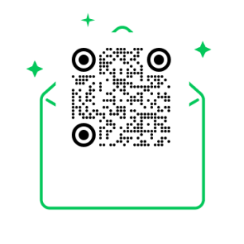

Daily Mooconomy
MORNING BRIEFING
잠든 사이 움직인 지표와 뉴스,
매일 아침 3줄로 배달합니다
코스피·코스닥·나스닥·환율·유가까지. 밤사이 흩어진 시장의 흐름을 하나로 모아, 오늘 꼭 알아야 할 핵심만 추려 드립니다.
완전 무료 · 월~토 아침 배달 · 1초 만에 해지
👀 실제 배달되는 브리핑 미리 보기
01 / TODAY STATUS
오늘 날짜 및 데이터 기준
발행일, 최근 업데이트 시각, 국내·미국 시장 기준일과 데이터 지연 여부를 한눈에 확인합니다
준비중 · 곧 추가됩니다
01 / MARKET TEMPERATURE
오늘의 시장 온도
위험선호부터 위험회피까지, 오늘 시장 분위기를 상태 레이블과 근거로 보여줍니다
준비중 · 곧 추가됩니다
02 / DAILY THREE
오늘의 3줄
간밤 글로벌 시장 → 전일 국내 시장 → 오늘의 체크포인트, 세 줄로 요약합니다
준비중 · 곧 추가됩니다
03 / MOO:Q & MOO:CHECK
오늘의 경제 질문 · 지난 질문의 결과
예측보다 검증 가능한 질문을 남깁니다 — '오늘의 연결고리'에서 나온 질문과 다음 거래일 실제 결과를 그대로 공개합니다. 투자 매수·매도를 권유하지 않습니다. 실험 운영 중입니다.
준비중 · 곧 추가됩니다
04 / TODAY'S NEWS
오늘의 뉴스 흐름
국내·글로벌 뉴스를 시간순으로 모아 보여줍니다
준비중 · 곧 추가됩니다
05 / KEY INDICATORS
핵심 시장 지표
코스피·코스닥·나스닥·원달러·미국채10년 등 핵심 지표를 카드로 확인합니다
준비중 · 곧 추가됩니다
06 / MARKET CONNECTION
오늘의 시장 연결고리
원인 지표 → 중간 영향 → 국내 시장 변수 → 확인할 결과로 이어지는 흐름을 보여줍니다
준비중 · 곧 추가됩니다
08 / TODAY CALENDAR
오늘의 경제 캘린더
이번 달 한국·미국 주요 경제 일정을 달력으로, 지난 일정은 결과와 함께 보여줍니다
준비중 · 곧 추가됩니다
09 / KOREA WATCH
국내 시장 체크포인트
외국인·기관·개인 수급, 원/달러 환율, 주도 업종, 주요 공시를 확인합니다
준비중 · 곧 추가됩니다
10 / TODAY RISK
오늘의 리스크
상승 논리에 치우치지 않도록 균형 잡힌 주의사항을 안내합니다
준비중 · 곧 추가됩니다
11 / LATEST ISSUE
실제 배달된 오늘의 'Moo'conomy
가장 최근에 발송된 실제 브리핑입니다. 3줄 요약부터 지표·해설까지, 받아보실 그대로 미리 확인하세요.
12 / SUBSCRIBE
내일 아침, 첫 메일부터 확인해보세요
Daily 'Moo'conomy는 완전 무료입니다. 마음에 안 들면 메일 하단 버튼 한 번으로 1초 만에 해지할 수 있습니다.
구독하면 다음 발행일 (월~토) 아침 첫 브리핑이 도착합니다.

이미지로 보고 계신가요?
QR을 찍어 바로 구독하세요
QR을 찍어 바로 구독하세요